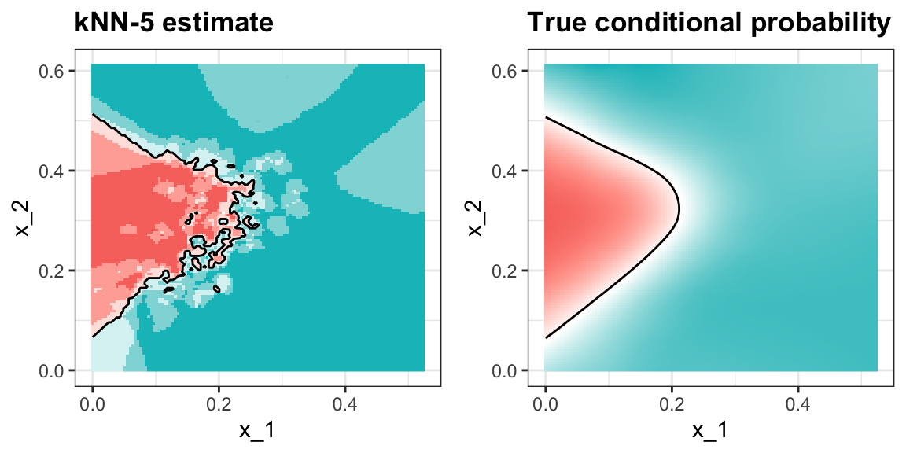
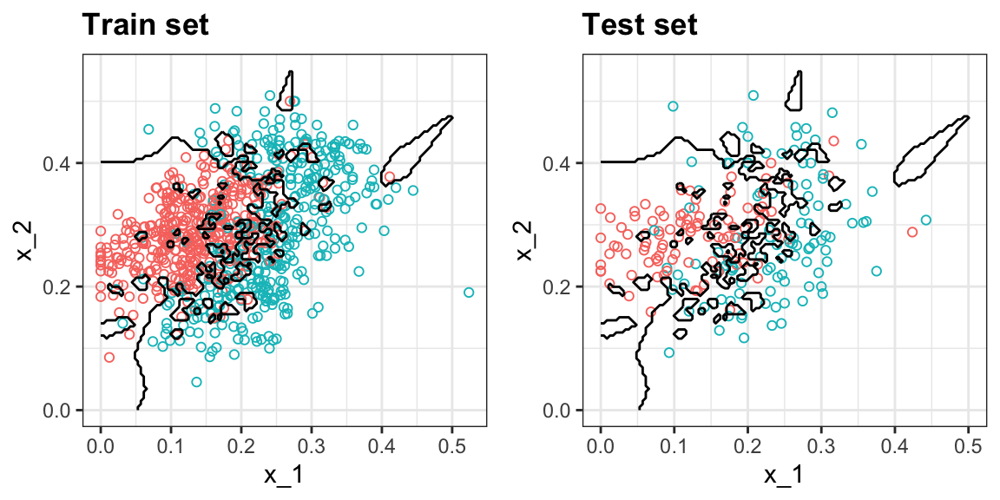
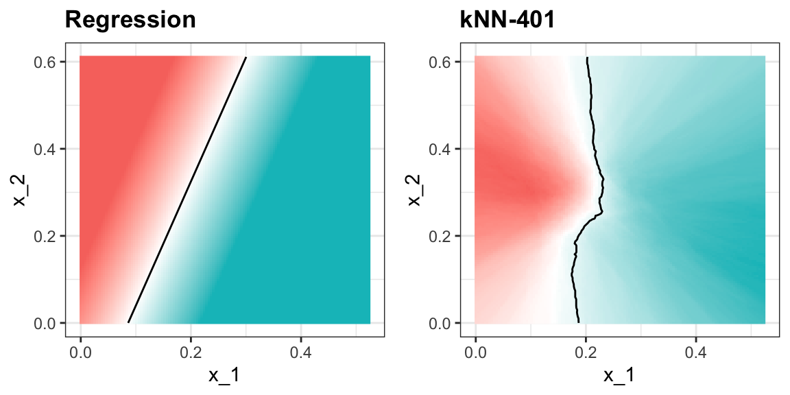
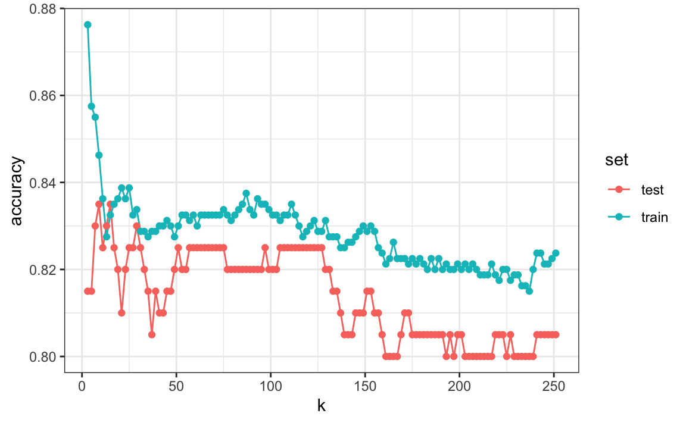
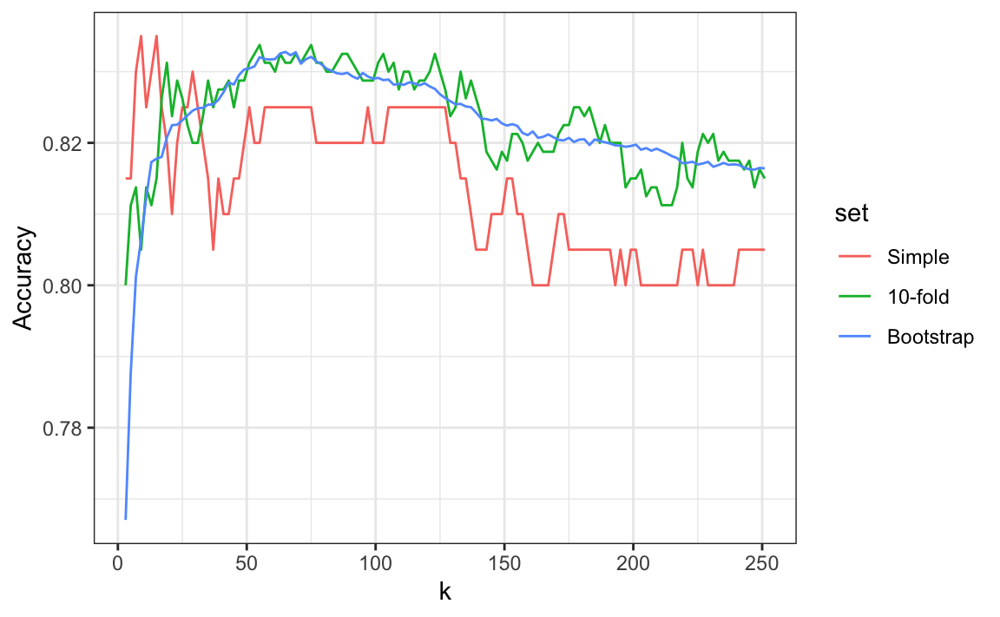

29 Resampling methods
In this chapter, we introduce resampling, one of the most important ideas in machine learning. Here we focus on the conceptual and mathematical aspects. We will describe how to implement resampling methods in practice with the caret package later in Section 32.1. To motivate the concept, we will use the two predictor digits data presented in Section 28.1 and introduce k-nearest neighbors (kNN), to demonstrate the ideas.
29.1 Motivation with k-nearest neighbors
We are interested in estimating the conditional probability function:
\[ p(\mathbf{x}) = \mathrm{Pr}(Y = 1 \mid X_1 = x_1 , X_2 = x_2). \]
as defined in Section 28.6.
With k-nearest neighbors (kNN) we estimate \(p(\mathbf{x})\) in a similar way to bin smoothing. First, we define the distance between all observations based on the features. Then, for any point \(\mathbf{x}_0\), we estimate \(p(\mathbf{x})\) by identifying the \(k\) nearest points to \(\mathbf{x}_0\) and afterwards taking an average of the \(y\)s associated with these points. We refer to the set of points used to compute the average as the neighborhood.
Due to the connection we described earlier between conditional expectations and conditional probabilities, this gives us \(\hat{p}(\mathbf{x}_0)\), just like the bin smoother gave us an estimate of a trend. As with bin smoothers, we can control the flexibility of our estimate through the \(k\) parameter: larger \(k\)s result in smoother estimates, while smaller \(k\)s result in more flexible and wiggly estimates.
To implement the algorithm, we can use the knn3 function from the caret package. Looking at the help file for this package, we see that we can call it in one of two ways. We will use the first way in which we specify a formula and a data frame. The data frame contains all the data to be used. The formula has the form outcome ~ predictor_1 + predictor_2 + predictor_3 and so on. Therefore, we type y ~ x_1 + x_2. If we are going to use variables in the data frame, we can use the . like this y ~ .. We also need to pick \(k\), which is set to k = 5 by default. The final call looks like this:
In this case, since our dataset is balanced and we care just as much about sensitivity as we do about specificity, we will use accuracy to quantify performance.
The predict function for knn3 produces a probability for each class. We can keep the probability of being a 7 as the estimate \(\hat{p}(\mathbf{x})\) using type = "prob". Here we obtain the actual prediction using type = "class":
y_hat_knn <- predict(knn_fit, mnist_27$test, type = "class")
confusionMatrix(y_hat_knn, mnist_27$test$y)$overall["Accuracy"]
#> Accuracy
#> 0.815We see that kNN, with the default parameter, already beats regression. To see why this is the case, we plot \(\hat{p}(\mathbf{x})\) and compare it to the true conditional probability \(p(\mathbf{x})\):

We see that kNN adapts better to the non-linear shape of \(p(\mathbf{x})\). However, our estimate has some islands of blue in the red area, which intuitively does not make much sense. We notice that we have higher accuracy in the train set compared to the test set:
y_hat_knn <- predict(knn_fit, mnist_27$train, type = "class")
confusionMatrix(y_hat_knn, mnist_27$train$y)$overall["Accuracy"]
#> Accuracy
#> 0.856
y_hat_knn <- predict(knn_fit, mnist_27$test, type = "class")
confusionMatrix(y_hat_knn, mnist_27$test$y)$overall["Accuracy"]
#> Accuracy
#> 0.815This is due to what we call over-training.
29.2 Over-training
With kNN, over-training is at its worst when we set \(k = 1\). With \(k = 1\), the estimate for each \(\mathbf{x}\) in the training set is obtained with just the \(y\) corresponding to that point. In this case, if the \(x_1\) and \(x_2\) are unique, we will obtain perfect accuracy in the training set because each point is used to predict itself (if the predictors are not unique and have different outcomes for at least one set of predictors, then it is impossible to predict perfectly).
Here we fit a kNN model with \(k = 1\) and confirm we get near perfect accuracy in the training set:
knn_fit_1 <- knn3(y ~ ., data = mnist_27$train, k = 1)
y_hat_knn_1 <- predict(knn_fit_1, mnist_27$train, type = "class")
confusionMatrix(y_hat_knn_1, mnist_27$train$y)$overall[["Accuracy"]]
#> [1] 0.994But in the test set, accuracy is actually worse than what we obtained with regression:
y_hat_knn_1 <- predict(knn_fit_1, mnist_27$test, type = "class")
confusionMatrix(y_hat_knn_1, mnist_27$test$y)$overall["Accuracy"]
#> Accuracy
#> 0.81We can see the over-fitting problem by plotting the decision rule boundaries produced by \(\hat{p}(\mathbf{x})\):

The estimate \(\hat{p}(\mathbf{x})\) follows the training data too closely (left). You can see that, in the training set, boundaries have been drawn to perfectly surround a single red point in a sea of blue. Because most points \(\mathbf{x}\) are unique, the prediction is either 1 or 0 and the prediction for that point is the associated label. However, once we introduce the test set (right), we see that many of these small islands now have the opposite color and we end up making several incorrect predictions.
29.3 Over-smoothing
Although not as badly as with \(k=1\), we saw that with \(k = 5\) we also over-trained. Hence, we should consider a larger \(k\). Let’s try, as an example, a much larger number: \(k = 401\).
knn_fit_401 <- knn3(y ~ ., data = mnist_27$train, k = 401)
y_hat_knn_401 <- predict(knn_fit_401, mnist_27$test, type = "class")
confusionMatrix(y_hat_knn_401, mnist_27$test$y)$overall["Accuracy"]
#> Accuracy
#> 0.76The estimate turns out to be similar to the one obtained with regression:

In this case, \(k\) is so large that it does not permit enough flexibility. We call this over-smoothing.
29.4 Tuning parameter
It is very common for machine learning algorithms to require that we set one or more values before fitting the model. A simple example is the choice of \(k\) in k-Nearest Neighbors (kNN). In Chapter 30, we will see additional examples. These values are referred to as tuning parameters, and an important part of applying machine learning in practice is choosing them, often called tuning the model.
So how do we pick tuning parameters? For instance, how do we decide on the best \(k\) in kNN? In principle, we want the value of \(k\) that maximizes accuracy or, equivalently, minimizes the expected MSE as defined in Section 26.8. The challenge is that we do not know the true expected error. The goal of resampling methods is to estimate this error for any given algorithm and set of tuning parameters, such as \(k\).
To see why we need resampling, let’s repeat what we did earlier: compare training and test set accuracy, but now for a range of \(k\) values. We can then plot the accuracy estimates for each choice of \(k\):

First, note that the estimate obtained from the training set is generally more optimistic, higher accuracy, than the estimate from the test set, with the gap being larger for smaller values of \(k\). This is a classic symptom of overfitting.
So should we simply pick the \(k\) that maximizes accuracy and report this value? There are two key problems with this approach:
The accuracy-versus-\(k\) plot is quite jagged. We do not expect small changes in \(k\) to cause large swings in accuracy or MSE. The jaggedness arises because the accuracy is estimated from a finite sample, making it a random variable.
Although we used the test set to estimate accuracy for each \(k\), we also used the same test set to select the best \(k\). As a result, the reported minimum test set error is overly optimistic and will not generalize to new, unseen data.
Resampling methods provide a principled solution to both problems by reducing variability and ensuring that test data are not used twice—once for evaluation and again for tuning.
29.5 Mathematical description of resampling methods
In the previous section, we introduced kNN as an example to motivate the topic of this chapter. In this particular case, there is just one parameter, \(k\), that affects the performance of the algorithm. However, in general, machine algorithms may have multiple parameters so we use the notation \(\lambda\) to represent any set of parameters needed to define a machine learning algorithm. We also introduce notation to distinguish the predictions you get with each set of parameters with \(\hat{y}(\lambda)\) and the MSE for this choice with \(\text{MSE}(\lambda)\). Our goal is to find the \(\lambda\) that minimizes \(\text{MSE}(\lambda)\). Resampling methods help us estimate \(\text{MSE}(\lambda)\).
An intuitive first attempt is the apparent error defined in Section 26.8 and used in the previous section:
\[ \hat{\mbox{MSE}}(\lambda) = \frac{1}{N}\sum_{i = 1}^N \left\{\hat{y}_i(\lambda) - y_i\right\}^2 \]
As noted in the previous section, this estimate is a random error, based on just one test set, with enough variability to affect the choice of the best \(\lambda\) substantially.
Now imagine a world in which we could obtain data repeatedly, say from new random samples. We could take a very large number \(B\) of new samples, split them into training and test sets, and define:
\[ \frac{1}{B} \sum_{b=1}^B \frac{1}{N}\sum_{i=1}^N \left\{\hat{y}_i^b(\lambda) - y_i^b\right\}^2 \]
with \(y_i^b\) the \(i\)th observation in sample \(b\) and \(\hat{y}_{i}^b(\lambda)\) the prediction obtained with the algorithm defined by parameter \(\lambda\) and trained independently of \(y_i^b\). The law of large numbers tells us that as \(B\) becomes larger, this quantity gets closer and closer to \(MSE(\lambda)\). This is of course a theoretical consideration as we rarely get access to more than one dataset for algorithm development, but the concept inspires the idea behind resampling methods.
The general idea is to generate a series of different random samples from the data at hand. There are several approaches to doing this, but all randomly generate several smaller datasets that are not used for training, and instead are used to estimate MSE. Next, we describe cross validation, one of the most widely used resampling methods.
29.6 Cross validation
Overall, we are provided a dataset (blue) and we need to build an algorithm, using this dataset, that will eventually be used in completely independent datasets (yellow) that we might not even see.

So to imitate this situation, we start by carving out a piece of our dataset and pretend it is an independent dataset: we divide the dataset into a training set (blue) and a test set (red). We will train the entirety of our algorithm, including the choice of parameter \(\lambda\), exclusively on the training set and use the test set only for evaluation purposes.
We usually try to select a small piece of the dataset so that we have as much data as possible to train. However, we also want the test set to be large so that we obtain a stable estimate of the MSE without fitting an impractical number of models. Typical choices are to use 10%-20% of the data for testing.

Let’s reiterate that it is indispensable that we not use the test set at all: not for filtering out rows, not for selecting features, not for anything!
But then how do we optimize \(\lambda\)? In cross validation, we achieve this by splitting the training set into two: the training and validation sets.

We will do this many times assuring that the estimates of MSE obtained in each dataset are independent from each other. There are several proposed methods for doing this. Here we describe one of these approaches, K-fold cross validation, in detail to provide the general idea used in all approaches.
29.6.1 K-fold cross validation
As a reminder, we are going to imitate the concept used when introducing this version of the MSE:
\[ \mbox{MSE}(\lambda) \approx\frac{1}{B} \sum_{b = 1}^B \frac{1}{N}\sum_{i = 1}^N \left(\hat{y}_i^b(\lambda) - y_i^b\right)^2 \]
We want to generate a dataset that can be thought of as independent random sample, and do this \(B\) times. The K in K-fold cross validation, represents the number of time \(B\). In the illustrations, we are showing an example that uses \(B = 5\).
We will eventually end up with \(B\) samples, but let’s start by describing how to construct the first: we simply pick \(M = N/B\) observations at random (we round if \(M\) is not a round number) and think of these as a random sample \(y_1^b, \dots, y_M^b\), with \(b = 1\). We call this the validation set.
Now we can fit the model in the training set, then compute the apparent error on the independent set:
\[ \hat{\mbox{MSE}}_b(\lambda) = \frac{1}{M}\sum_{i = 1}^M \left(\hat{y}_i^b(\lambda) - y_i^b\right)^2 \]
As a reminder, this is just one sample and will therefore return a noisy estimate of the true error. In K-fold cross validation, we randomly split the observations into \(B\) non-overlapping sets:

Now we repeat the calculation above for each of these sets \(b = 1,\dots,B\) and obtain \(\hat{\mbox{MSE}}_1(\lambda),\dots, \hat{\mbox{MSE}}_B(\lambda)\). Then, for our final estimate, we compute the average:
\[ \hat{\mbox{MSE}}(\lambda) = \frac{1}{B} \sum_{b = 1}^B \hat{\mbox{MSE}}_b(\lambda) \]
and obtain an estimate of our loss. A final step would be to select the \(\lambda\) that minimizes the MSE.
29.6.2 How many folds?
Now how do we pick the cross validation fold? Large values of \(B\) are preferable because the training data better imitates the original dataset. However, larger values of \(B\) will have much slower computation time: for example, 100-fold cross validation will be 10 times slower than 10-fold cross validation. For this reason, the choices of \(B = 5\) and \(B = 10\) are popular.
One way we can improve the variance of our final estimate is to take more samples. To do this, we would no longer require the training set to be partitioned into non-overlapping sets. Instead, we would just pick \(B\) sets of some size at random.
29.6.3 Estimate MSE of our optimized algorithm
We have described how to use cross validation to optimize parameters. However, we now have to take into account the fact that the optimization occurred on the training data and we therefore need an estimate of our final algorithm based on data that was not used to optimize the choice. Here is where we use the test set we separated early on:

We can actually do cross validation again:

and obtain a final estimate of our expected loss. However, note that last cross validation iteration means that our entire compute time gets multiplied by \(K\). You will soon learn that fitting each algorithm takes time because we are performing many complex computations. As a result, we are always looking for ways to reduce this time. For the final evaluation, we often just use the one test set.
Once we are satisfied with this model and want to make it available to others, we could refit the model on the entire dataset, without changing the optimized parameters.

29.7 Boostrap resampling
Typically, cross-validation involves partitioning the original dataset into a training set to train the model and a testing set to evaluate it. With the bootstrap approach, based on the ideas described in Chapter 13, you can create multiple different training datasets via bootstrapping. This method is sometimes called bootstrap aggregating or bagging.
In bootstrap resampling, we create a large number of bootstrap samples from the original training dataset. Each bootstrap sample is created by randomly selecting observations with replacement, usually the same size as the original training dataset. For each bootstrap sample, we fit the model and compute the MSE estimate on the observations not selected in the random sampling, referred to as the out-of-bag observations. These out-of-bag observations serve a similar role to a validation set in standard cross-validation.
We then average the MSEs obtained in the out-of-bag observations from each bootstrap sample to estimate the model’s performance.
This approach is actually the default approach in the caret package. We describe how to implement resampling methods with the caret package in the next chapter.
29.7.1 Comparison of MSE estimates
In Section 29.1, we computed an estimate of MSE based just on the provided test set (shown in red in the plot below). Here we show how the cross-validation techniques described above help reduce variability. The green curve below shows the results of applying K-fold cross validation with 10 folds, leaving out 10% of the data for validation. We can see that the variance is reduced substantially. The blue curve is the result of using 100 bootstrap samples to estimate MSE. The variability is reduced even further, but at the cost of a 10 fold increase in computation time.

29.8 Exercises
Generate a set of random predictors and outcomes like this:
1. Because x and y are completely independent, you should not be able to predict y using x with accuracy larger than 0.5. Confirm this by running cross validation using logistic regression to fit the model. Because we have so many predictors, we selected a random sample x_subset. Use the subset when training the model. Hint: use the caret train function. The results component of the output of train shows you the accuracy. Ignore the warnings.
2. Now instead of a random selection of predictors, we are going to search for those that are most predictive of the outcome. We can do this by comparing the values for the \(y = 1\) group to those in the \(y = 0\) group, for each predictor, using a t-test. You can perform this step as follows:
devtools::install_bioc("genefilter")
install.packages("genefilter")
library(genefilter)
tt <- colttests(x, y)Create a vector of the p-values and call it pvals.
3. Create an index ind with the column numbers of the predictors that were “statistically significantly” associated with y. Use a p-value cutoff of 0.01 to define “statistically significant”. How many predictors survive this cutoff?
4. Re-run the cross validation but after redefining x_subset to be the subset of x defined by the columns showing “statistically significant” association with y. What is the accuracy now?
5. Re-run the cross validation again, but this time using kNN. Try out the following grid of tuning parameters: k = seq(101, 301, 25). Make a plot of the resulting accuracy.
6. In exercises 3 and 4, we see that despite the fact that x and y are completely independent, we were able to predict y with accuracy higher than 70%. We must be doing something wrong then. What is it?
- The function
trainestimates accuracy on the same data it uses to train the algorithm. - We are over-fitting the model by including 100 predictors.
- We used the entire dataset to select the columns used in the model. This step needs to be included as part of the algorithm. The cross validation was done after this selection.
- The high accuracy is just due to random variability.
7. Advanced. Re-do the cross validation but this time include the selection step in the cross validation. The accuracy should now be close to 50%.
8. Load the tissue_gene_expression dataset. Use the train function to predict tissue from gene expression. Use kNN. What k works best?
9. The createResample function can be used to create bootstrap samples. For example, we can create 10 bootstrap samples for the mnist_27 dataset like this:
set.seed(1995)
indexes <- createResample(mnist_27$train$y, 10)How many times do 3, 4, and 7 appear in the first re-sampled index?
10. We see that some numbers appear more than once and others appear no times. This must be so for each dataset to be independent. Repeat the exercise for all the re-sampled indexes.